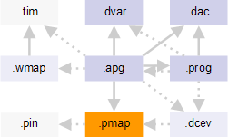

Pin mapping file
The pin mapping file maps pin definitions from the Device access file to pin or pin group specifications from the SmarTest Pin configuration file. The MTL compiler creates test patterns only for SmarTest pins for which APG pin names have been specified in the pin mapping file.

The pin mapping file has the .pmap file name extension. It is referenced from the APG pattern file with the :pinMap: keyword.
You can specify in the pin mapping file:
- APG pin definition assignments for each DUT pin to be tested.
Per-pin subroutines are generated only for pins which are listed in the pin mapping file.
- Transparent x-modes definitions, both global and pin-specific.
- The mode context for the Automatic waveform generation.
The mode context is needed only if you are using automatic waveform generation or generating a test label and no mode context is defined in the wavetable.
Example
DM.000=DM DM=DM_Bus DQi.007=DQ_i.07 DQi.006=DQ_i.06 DQi.005=DQ_i.05 DQi.004=DQ_i.04 DQi.003=DQ_i.03 DQi.002=DQ_i.02 DQi.001=DQ_i.01 DQi.000=DQ_i.00 DQi=DQi_Bus DQo.007=DQ_o.07 DQo.006=DQ_o.06 DQo.005=DQ_o.05 DQo.004=DQ_o.04 DQo.003=DQ_o.03 DQo.002=DQ_o.02 DQo.001=DQ_o.01 DQo.000=DQ_o.00 DQo=DQ_Bus DQSi.001=DQS_i DQSi.000=DQSn_i DQSi=DQSi_DiffBus DQSo.001=DQS_o DQSo.000=DQSn_o DQSo=DQS_DiffBus Bank.002=BA.2 Bank.001=BA.1 Bank.000=BA.0 Bank=Bank_Addr_Bus Address.012=A.12 Address.011=A.11 Address.010=A.10 Address.009=A.09 Address.008=A.08 Address.007=A.07 Address.006=A.06 Address.005=A.05 Address.004=A.04 Address.003=A.03 Address.002=A.02 Address.001=A.01 Address.000=A.00 Address=Address_Bus CK=CK CKn=CKn CKE=CKE CSn=CSn RASn=RASn CASn=CASn WEn=WEn RESETn=RESETn ODT=ODT
Functional changes
- Introduced before SmarTest 6.3.2